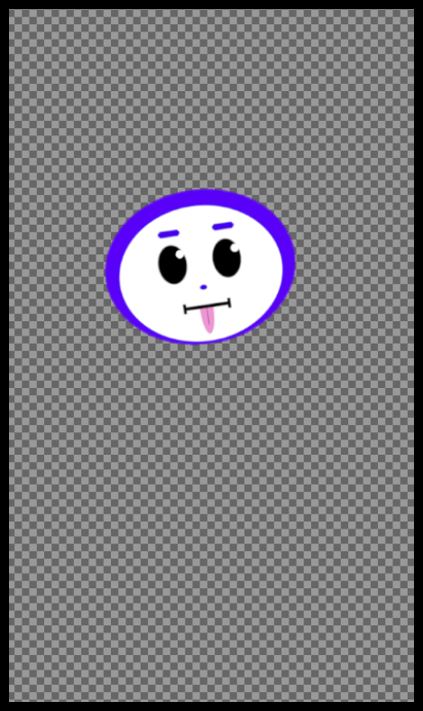
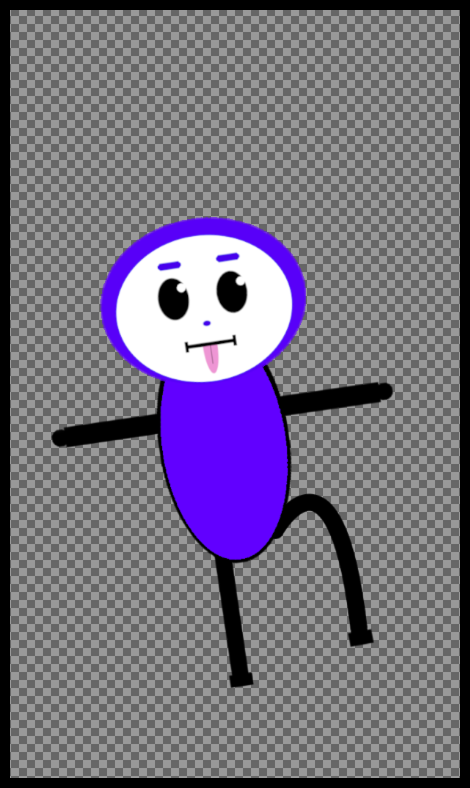
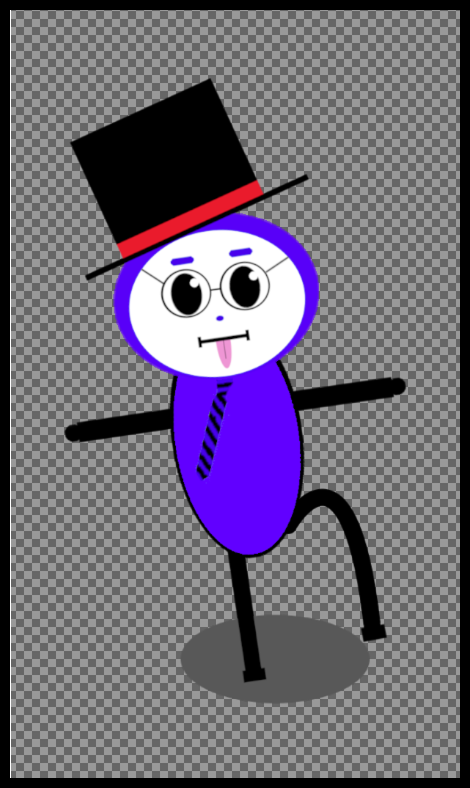
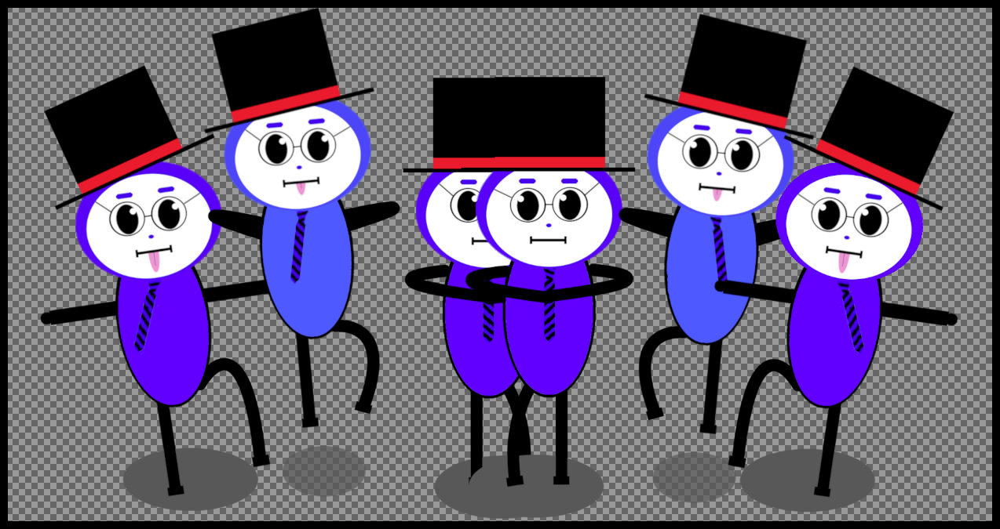
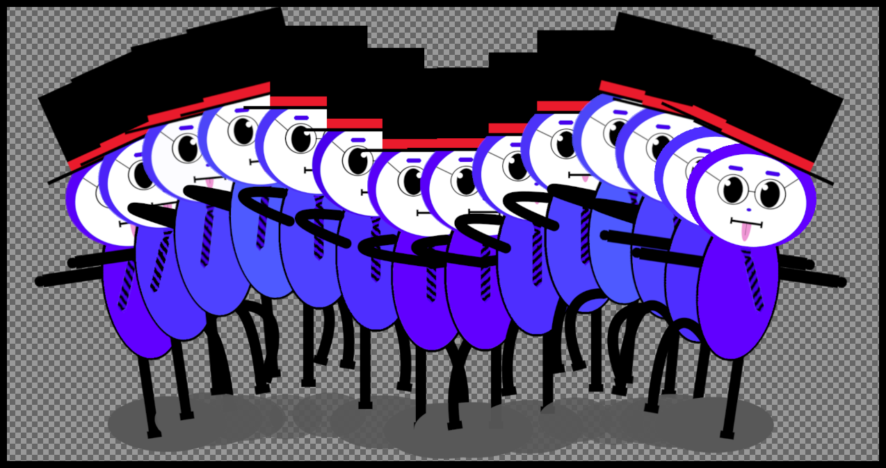
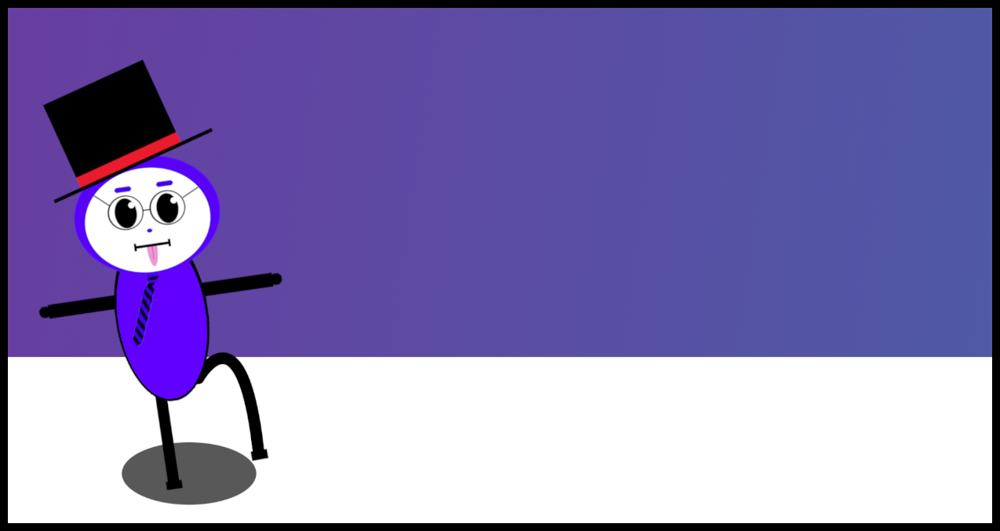
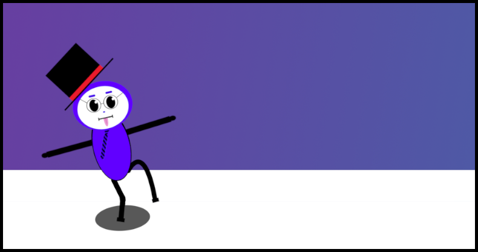

キャラクターの繊細な動きを表現した2DCGアニメーション作品
「踊るマジシャン」
2年次前期の授業「コンピュータグラフィックス基礎」で個人制作した2DCGアニメーションです。140枚のフレームにより、滑らかな動きで踊るマジシャンを表現しています。
使用ツール
- GIMP

目的
授業では「GIMPを使用して、自分が描いた絵で2DCGアニメーションを制作する」という要件が与えられたため、これまでに制作したことのない、キャラクターをテーマにした作品を、自分で絵を描いて制作したいと考えました。
画像編集ソフトの利用をメインとした制作は未経験であったため、キャラクターの細かな動きの表現を通して、画像編集ソフトの機能や使い方を理解することを目的としました。
制作プロセス
1. キャラクター作成



全体的に、ポップな雰囲気を目指しました。
画像編集ソフトで使用できる基本的な図形を変形させ、それらを組み合わせて作成しています。動きが分かりやすくなるように、メガネやネクタイなどの装飾を施しています。
2. キーフレーム作成

キャラクターの動きは、以前テレビで見た芸人のダンスからインスピレーションを得ました。
キャラクターの大きさを徐々に変えていくことで、近づいたり離れたりする動きを表現し、ループするアニメーションを実現しています。また、キャラクターの腕や脚、装飾品、影などをパーツとして分け、それぞれを少しずつ回転させたり移動したりすることで、繊細な動きを表現しています。
3. 中割り

滑らかなアニメーションにするため、キーフレームの間に微細な変化を加えた絵を多く差し込んでいます。
4. 改善
Before

After

キャラクターの動きをより分かりやすくするため、フレームを1枚ずつ調整し、身体や帽子の傾きをさらに大きくしました。
獲得した学び
画像編集ソフトを利用して2DCGアニメーションを制作したことで、画像編集ソフトの使い方やアニメーションの基本的な制作プロセスを理解することができました。
自分で作成したキャラクターをアニメーションにして動かすことは、有意義な経験になったと考えています。特に中割りの段階は、アニメーションについての確実な理解に繋がりました。3DCGアニメーションを作成した際は、コンピュータの計算で中割を自動生成していましたが、今回は手作業で作成したことで、アニメーションを深く理解することができました。また、オリジナルキャラクターの作成により、自分の表現の幅の広がりを実感しています。
Web制作においても、アニメーションを使用する場面は多くあります。今回得た学びを活かし、今後はCSSやJavaScriptにおけるアニメーションについても学習することで、アニメーション制作のスキルをWeb制作に応用していきたいと考えています。